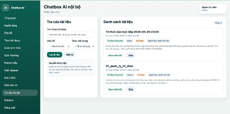

01
Bối cảnh hình thành
Người học còn thiếu công cụ tương tác tức thời; việc giải đáp thắc mắc chưa kịp thời và có phụ thuộc vào tài liệu rời rạc.
Hỗ trợ học tập môn Tin học trong môi trường nội bộ an toàn, hiệu quả và dễ sử dụng.
Vui lòng nhập mật khẩu để mở website giới thiệu sáng kiến.
Hệ thống được nghiên cứu, xây dựng và phát triển nhằm hỗ trợ học viên hỏi đáp, tra cứu kiến thức, luyện tập và tương tác học tập một cách linh hoạt và có hệ thống.

Sáng kiến được hình thành từ yêu cầu thực tiễn trong giảng dạy môn Tin học và định hướng chuyển đổi số giáo dục, hướng tới mô hình học tập hiện đại.
Người học còn thiếu công cụ tương tác tức thời; việc giải đáp thắc mắc chưa kịp thời và có phụ thuộc vào tài liệu rời rạc.
Xây dựng hệ thống Chatbot AI nội bộ hỗ trợ hỏi đáp, tra cứu, luyện tập và khai thác tri thức hiệu quả.
Không chỉ nâng cao hiệu quả dạy và học, sáng kiến còn là bước đi cụ thể trong hành trình chuyển đổi số.
Dù đã có nhiều giải pháp ứng dụng công nghệ thông tin, thực tiễn giảng dạy môn Tin học vẫn còn tồn tại những hạn chế.
Quá trình nghiên cứu, thiết kế, xây dựng và thử nghiệm hệ thống được triển khai theo từng giai đoạn rõ ràng.
Tiến hành khảo sát thực tế, xác định ý tưởng, mục tiêu, phạm vi và yêu cầu nghiệp vụ đối với hệ thống Chatbot AI.
Thu thập, chuẩn hóa dữ liệu tri thức; xây dựng kiến trúc hệ thống; lập trình phiên bản demo; xin ý kiến góp ý của lãnh đạo và giáo viên.
Hoàn thiện hệ thống, đánh giá tổng thể mức độ đáp ứng yêu cầu thực tiễn và đề xuất nghiệm thu.
Khu vực trình chiếu dưới đây sử dụng trực tiếp các ảnh chụp từ hệ thống thực tế với hiệu ứng chuyển cảnh mượt.
Nội dung dưới đây được tổ chức lại theo nhóm logic để trình bày rõ ràng hơn.
Giao diện hệ thống được thiết kế thân thiện, trực quan và dễ sử dụng.
Nhóm chức năng quản trị cho phép tạo và quản lý người dùng, chủ đề, nội dung.
Nhóm chức năng cốt lõi gồm nạp tri thức, Q&A Training, prompt mẫu và xuất dataset training.
Hệ thống không chỉ trả lời câu hỏi mà còn ghi nhận tương tác thực tế.
Tra cứu tài liệu và Chatbot AI là hai chức năng trực tiếp phục vụ người học.
Sau quá trình nghiên cứu, xây dựng và triển khai thử nghiệm, sáng kiến đã cho thấy hiệu quả rõ rệt.